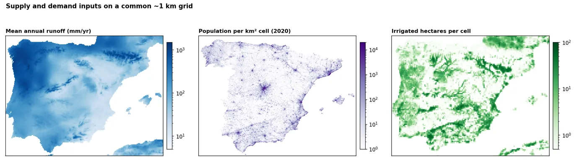
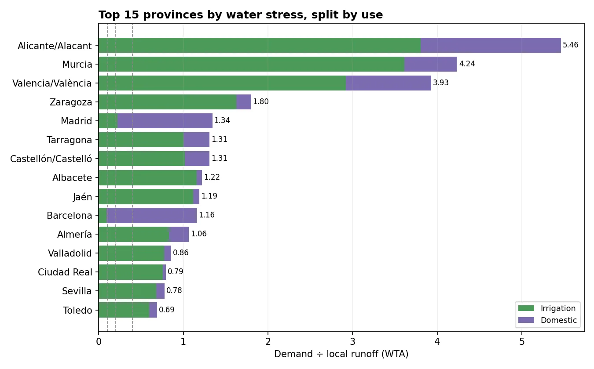

The question
Water managers, farmers and investors want to know where demand already outstrips the water a region produces, and what drives it. Answering that consistently across a whole country needs the same data and the same rules everywhere.
What I did
- Estimated supply from TerraClimate runoff (1991–2020 average, about 4 km), converted to cubic metres with each cell's true area.
- Estimated household demand from WorldPop 2020 population counts at 0.2 m³ per person per day.
- Estimated irrigation demand from the FAO map of irrigated land at 4,000 m³ per hectare per year.
- Put everything on one 1 km grid without losing totals. People and hectares were summed or split by area, never stretched or interpolated.
- Calculated the stress ratio (WTAWithdrawal-to-availability ratio: yearly water demand divided by the water generated locally. Above 0.4 counts as high stress.) for each province and tested how it changes when each assumption moves.
What the results show

Spain as a whole needs about a quarter of the water its land generates, which is already above the "medium-high stress" line. The pattern is very uneven. The south-east (Alicante, Murcia, Valencia) needs four to six times the water it produces, almost all for irrigation. Madrid and Barcelona are stressed because millions of people live on a small area. The Atlantic north has plenty.

How sure can we be?
- Only local water is counted. Rivers flowing in from upstream, transfers between basins, groundwater and desalination are left out, so south-eastern and downstream provinces look more stressed than their real supply position.
- The irrigation rate matters most. Between 3,000 and 6,000 m³ per hectare, the national ratio moves from 0.19 to 0.34, but the south-east is highly stressed in every scenario.
- Annual averages hide droughts, which is when shortages actually happen.
What a client gets
- Stress maps and a province table for any country or region
- Scenario runs for different water-use assumptions
- Gridded supply and demand layers to combine with your own data
- A short report on which areas are robustly stressed and which depend on assumptions